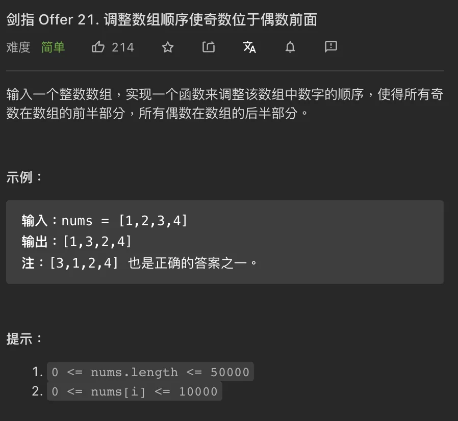

剑指 Offer 21. 调整数组顺序使奇数位于偶数前面
Question

✍🏽 My Solution
执行用时：2 ms, 在所有 Java 提交中击败了51.37%的用户
内存消耗：49.3 MB, 在所有 Java 提交中击败了25.24%的用户
class Solution {
public int[] exchange(int[] nums) {
int n = nums.length;
if (n <= 0) return nums;
int i = 0;
int j = n-1;
while (i < j) {
if (nums[i] % 2 == 0 && nums[j] % 2 != 0) { // i是偶數 j是奇數
swap(nums, i, j);
i++;
j--;
}
if (nums[i] % 2 != 0) { // i是奇數
i++;
}
if (nums[j] % 2 == 0) { // j是偶數
j--;
}
}
return nums;
}
private void swap(int[] nums, int a, int b){
int tmp = nums[a];
nums[a] = nums[b];
nums[b] = tmp;
}
}
🧠 Thought Process
- Why did I choose this particular implementation?
- 定義頭指針為 i ，尾指針為 j，循環直到 i > j
- 判斷 i是偶數 j是奇數時，交換兩數，i j 各自移動一位
- 如果 i 是奇數，i 往後移動一位
- 如果 j 是偶數，j 往前移動一位，直到 i > j
- What is the time/space complexity of my solution? How do I know?
- time: O(n)
- space: O(1)
- What mistakes did I make?
- 一開始把交換放到後面，會導致循環條件判斷錯誤，在循環裡面的時候 i 就大於 j，所以導致交換就出錯
Solution #1 [王爭-雙指針]
执行用时：1 ms, 在所有 Java 提交中击败了100.00%的用户
内存消耗：49.6 MB, 在所有 Java 提交中击败了5.28%的用户
class Solution {
public int[] exchange(int[] nums) {
int n = nums.length;
if (n <= 0) return nums;
int i = 0;
int j = n-1;
while (i < j) {
if (nums[i] % 2 == 1) { // i是奇數
i++;
continue;
}
if (nums[j] % 2 == 0) { // j是偶數
j--;
continue;
}
int tmp = nums[i];
nums[i] = nums[j];
nums[j] = tmp;
i++;
j--;
}
return nums;
}
}
Explanation (in my words)
- What is the space/time complexity of their solution?
- time: O(n)
- space: O(1)